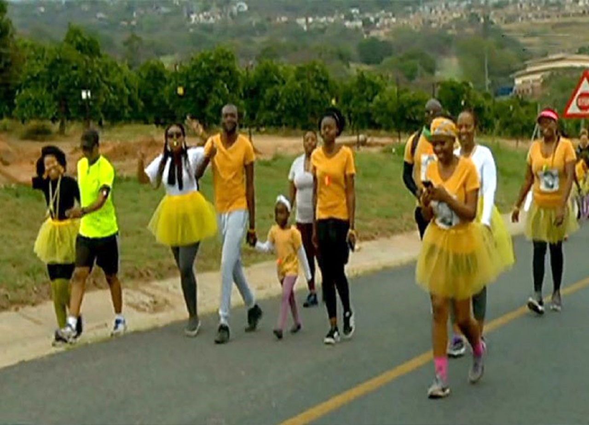

Durban fun walk raises funds for homeless people
14 September 2019. 3:32 PM

A fun walk to raise help for the homeless was held in Durban , KwaZulu Natal.
A little over 200 people participated in the walk.
Fundraiser , Sally Pierce has stated that they wanted to raise about R10 000 for these men , women and children.
Pierce has urged all the people of the province to take part in such initiatives.
"We are helping men , women and children from our townships because we know that there is more need there, there is no money, there is no food.”